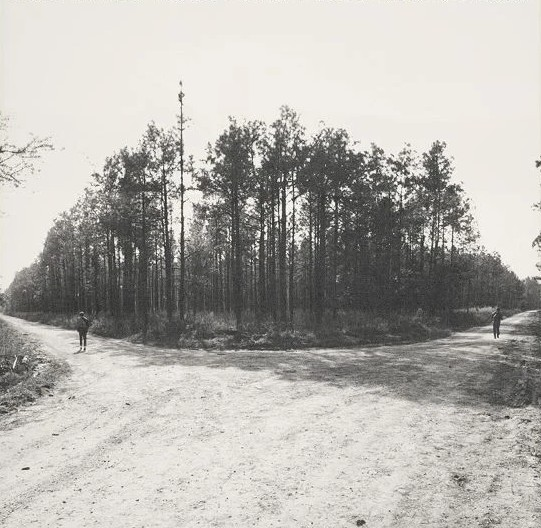

offbeat on a crooked path—always unique, almost native—

somewhere off the beaten path
Which path will you take?

Which path will you take?
Season by Season — A Journey Through the Season
Watching dozens of anime week after week—not as separate shows, but as parts of an entire season—is a completely different viewing experience.
It's like following a winding trail through the woods, off the beaten path. The whole landscape changes from week to week, with exhilarating highs, infuriating lows, surprises, and unexpected turns revealing new perspectives along the way.
By the finale, every one of those moments has helped shape the journey, becoming part of a joy that only the entire experience can bring.
There's no single way to enjoy anime, but I believe this is one way to truly embrace it.

EPISODES 3–4 / OCT 18–24
VIEW WEEK 03Words, expression, and the joy of discovering them.
The existing Flashcards entry page — not the unfinished Stage 7 WLP.
OPEN FLASHCARDSFlashcards opens in a separate browser tab so you can return here (or to OFFBEAT HOME) without losing your place. The Flashcards site itself has not been modified.
BACK TO OFFBEAT HOME TO ANIME HOMESmall discoveries, short notes, and everything in between.
This section is intentionally a placeholder. No new blog feed or publishing system has been invented yet.
One possible home for quick posts, film, music, books, and occasional longer writing.
BACK TO THE PATH